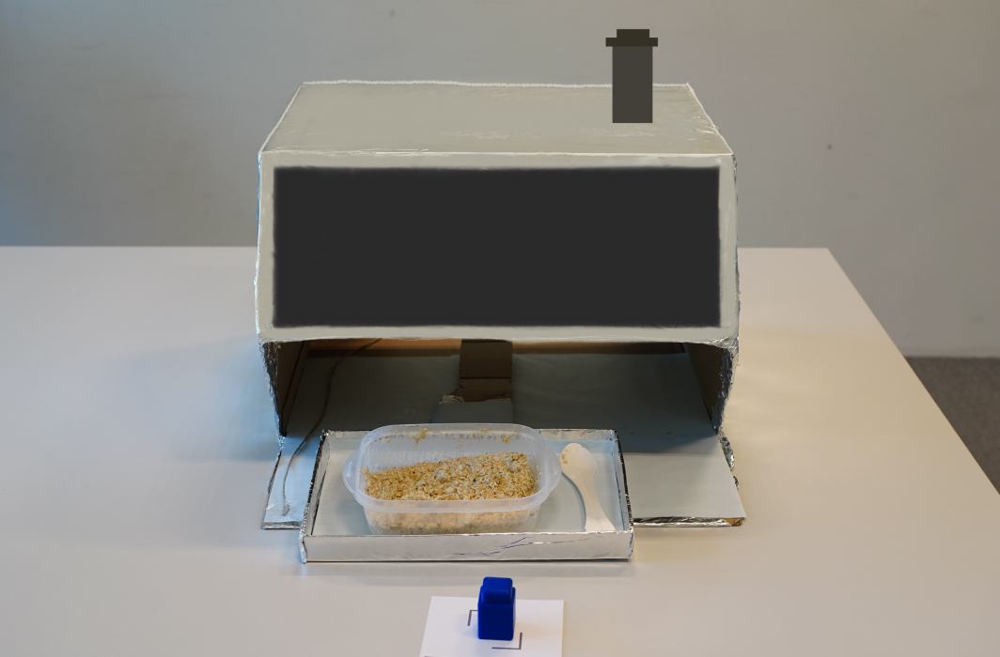
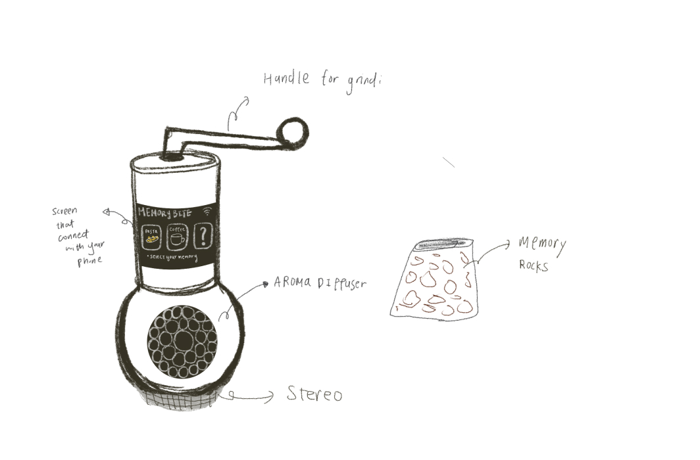
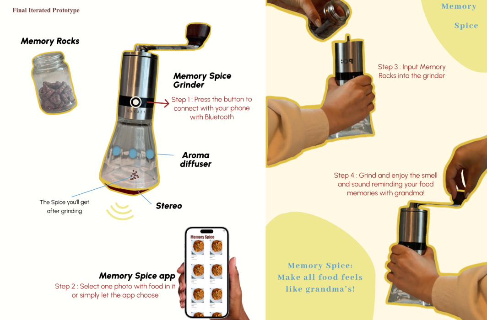

UX Design · Design Research
Memory Spice: culinary heritage through multi-sensory food memories
A Research-through-Design study exploring how smell, sound, and touch can preserve and reactivate food memories tied to disappearing culinary traditions.
Project description
Culinary traditions such as food preparation and cooking processes passed down without recipes are forms of Intangible Cultural Heritage. With globalization homogenizing consumption practices, these living expressions of culture risk being lost. This project investigates how multi-sensory experiences tied to traditional cooking can preserve and reactivate food memories, and how technology might support that process.
The work sits at the intersection of anthropology, digital gastronomy, and human-technology interaction, guided by two research questions across two artefact phases:
Phase 1 — How do people reflect on food traditions when their autonomy of food choices is restricted?
Phase 2 — In what ways does engaging with multi-sensory elements of traditional cooking trigger reflective food memories?
-
01
Build a provocation AutoBite: a machine that strips away every food choice, made deliberately unpleasant to provoke a reaction worth studying.
-
02
Put people in front of it Ten participants used it and were interviewed afterwards about food, autonomy, and what they had just been denied.
-
03
Analyse what they reacted to Six themes emerged — and two of them, sensory variety and cooking as a social act, pointed at where to go next.
-
04
Build the answer to it Memory Spice — a second artefact that gives back exactly what the first one removed, through smell, sound, and the act of grinding.
Develop artefact 1: AutoBite
A speculative cooking machine that removed all food autonomy. Participants scanned fingerprints, received nutritionally optimized oatmeal, and were given a five-minute eating window. The machine imposed zero decision-making, to provoke strong reactions about food and identity.


Interviews & thematic analysis
Ten participants interacted with AutoBite and were interviewed. Six themes emerged:
- Autonomy in food choices
- Cooking as a cultural and emotional activity
- Sensory variety in food
- The social aspects of eating
- Convenience and efficiency
- Dislike of time constraints
Demonstration Video on the research process
Insights driving iteration
Participants almost universally rejected the unappealing oatmeal and emphasized cravings for rich sensory experiences. Cooking was consistently framed as a social and cultural act, not merely a practical one — pointing toward sensory elements and the cooking process as the two most productive areas for iteration.
Develop artefact 2: Memory Spice
A multi-sensory simulation device designed to make any food feel "homemade." The device pairs a hand grinder with Memory Rocks, an aroma diffuser, and a stereo. Users connect the device to their phone's photo album via Bluetooth — the app detects food-related photos, and while grinding the Memory Rocks, the device diffuses matching aromas and plays ambient sounds recreating the memory: the scent of tomatoes, the sound of a grandmother's kitchen.


Result & Discussion
Memory Spice produced a concept that directly responded to the interview findings, engaging smell and hearing simultaneously with a low-effort physical interaction (grinding) that invites users into a symbolic cooking act without requiring culinary skill.
Sensory triggers as memory vehicles
The prototype confirmed that smell and sound are potent cues for food memory recall, supporting prior research by Sutton (2018) and Holtzman (2006). Grounding this in a personal photo album situates the experience in individual rather than generic cultural memory.
Cooking as participation, not production
The grinding interaction preserved the feeling of making something without requiring actual cooking skill — addressing the insight that participants valued the act of cooking even when they did not cook regularly.
Questions raised for future research
- Which senses are most effective at triggering food memory?
- Could a photo-driven app disrupt or enhance the food experience?
- If recalling food memories becomes trivially easy through technology, will people still seek out physical communal eating?
Limitations acknowledged
The original AutoBite prototype required a confederate to manually push food to participants, which may have influenced some reactions despite efforts to minimize human factors. The iterated artefact remained at a conceptual prototype stage, leaving sensory accuracy and app behavior untested with real users.
Next in the journal —